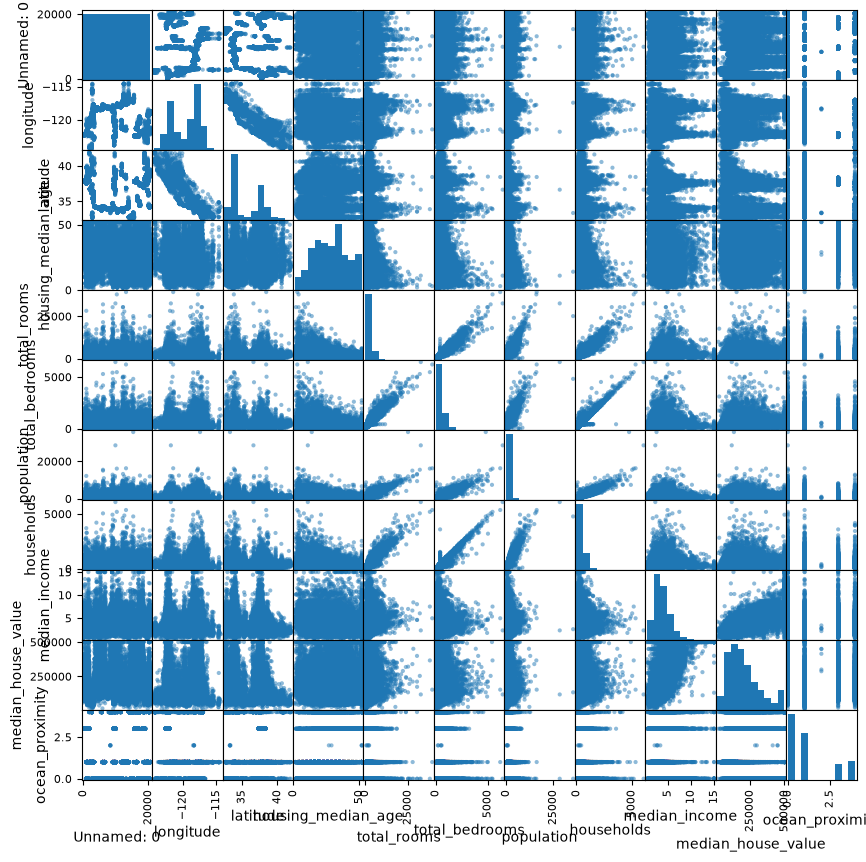
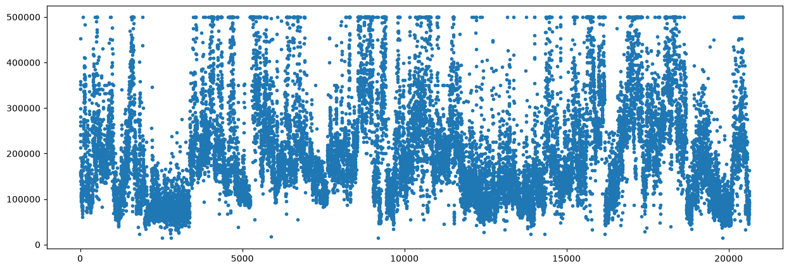
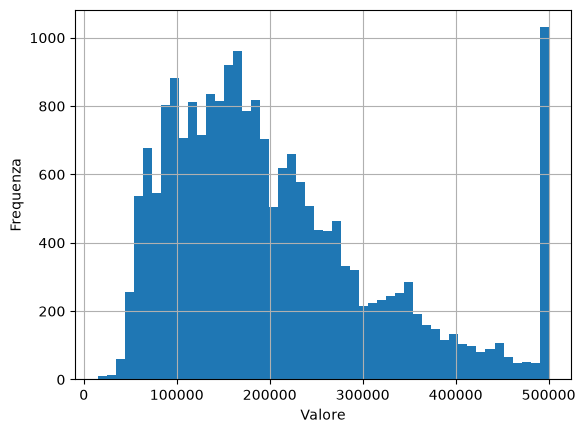

Esercizio 3) Regressione multipla#
Consegna:#
A partire dal dataset contenuto nel file housing1.csv, analizza i dati del dataframe e crea il modello di regressione lineare multipla per predire il prezzo delle case (feature median_house_value).
In particolare:
importa i dati dal file con la funzione di
pandas;guarda alle dimensioni del dataset e alle sue prime righe;
utilizzando la funzione
scatter_matrixdipandas.plotting, guarda se e come correlano le variabili del dataset fra loro;dividi i dati per la regressione fra variavili indipendenti (variabile
X) e variabile dipendente (variabiley), poi separa i dati per train e test;sfruttando la funzione
LinearRegressiondisklearn.linear_model, calcola la regressione multipla sul train set e analizza i coefficienti calcolati: quali features fanno aumentare il prezzo medio delle case? Quali abbassano il costo e quali non incidono sul prezzo?fai testing, poi analizza i residui e calcola le metriche di R-quadro e MSE.
Ripeti la regressione multipla sul dataset dell’esercizio 2, per predire Life_expectancy.
Features del dataset. Ogni osservazione descrive una area censuaria della California. I dati sono relativi al 1990. Le features sono:
longitudeelatitude: coordinate geografiche dell’area;housing_median_age: anni (in media) delle abitazioni;total_rooms: num totale delle camere nell’area;total_bedrooms: num totale delle camere da letto nell’area;population: popolazione nell’area (unità);households: num dei nuclei familiari nell’area;median_income: media degli stipendi, per 10K dollcari;ocean_proximity: indice di vicinanza dell’area all’oceano; ha valori in {0,1,2,3,4}.
Caricamento dei dati#
import numpy as np
import pandas as pd
import matplotlib.pyplot as plt
df=pd.read_csv("housing1.csv")
print(type(df))
---------------------------------------------------------------------------
FileNotFoundError Traceback (most recent call last)
Cell In[2], line 1
----> 1 df=pd.read_csv("housing1.csv")
2
3 print(type(df))
File ~\anaconda3\envs\libro\Lib\site-packages\pandas\io\parsers\readers.py:872, in read_csv(filepath_or_buffer, sep, delimiter, header, names, index_col, usecols, dtype, engine, converters, true_values, false_values, skipinitialspace, skiprows, skipfooter, nrows, na_values, keep_default_na, na_filter, skip_blank_lines, parse_dates, date_format, dayfirst, cache_dates, iterator, chunksize, compression, thousands, decimal, lineterminator, quotechar, quoting, doublequote, escapechar, comment, encoding, encoding_errors, dialect, on_bad_lines, low_memory, memory_map, float_precision, storage_options, dtype_backend)
860 kwds_defaults = _refine_defaults_read(
861 dialect,
862 delimiter,
(...) 868 dtype_backend=dtype_backend,
869 )
870 kwds.update(kwds_defaults)
--> 872 return _read(filepath_or_buffer, kwds)
File ~\anaconda3\envs\libro\Lib\site-packages\pandas\io\parsers\readers.py:300, in _read(filepath_or_buffer, kwds)
297 _validate_names(kwds.get("names", None))
299 # Create the parser.
--> 300 parser = TextFileReader(filepath_or_buffer, **kwds)
302 if chunksize or iterator:
303 return parser
File ~\anaconda3\envs\libro\Lib\site-packages\pandas\io\parsers\readers.py:1643, in TextFileReader.__init__(self, f, engine, **kwds)
1640 self.options["has_index_names"] = kwds["has_index_names"]
1642 self.handles: IOHandles | None = None
-> 1643 self._engine = self._make_engine(f, self.engine)
File ~\anaconda3\envs\libro\Lib\site-packages\pandas\io\parsers\readers.py:1907, in TextFileReader._make_engine(self, f, engine)
1905 if "b" not in mode:
1906 mode += "b"
-> 1907 self.handles = get_handle(
1908 f,
1909 mode,
1910 encoding=self.options.get("encoding", None),
1911 compression=self.options.get("compression", None),
1912 memory_map=self.options.get("memory_map", False),
1913 is_text=is_text,
1914 errors=self.options.get("encoding_errors", "strict"),
1915 storage_options=self.options.get("storage_options", None),
1916 )
1917 assert self.handles is not None
1918 f = self.handles.handle
File ~\anaconda3\envs\libro\Lib\site-packages\pandas\io\common.py:930, in get_handle(path_or_buf, mode, encoding, compression, memory_map, is_text, errors, storage_options)
925 elif isinstance(handle, str):
926 # Check whether the filename is to be opened in binary mode.
927 # Binary mode does not support 'encoding' and 'newline'.
928 if ioargs.encoding and "b" not in ioargs.mode:
929 # Encoding
--> 930 handle = open(
931 handle,
932 ioargs.mode,
933 encoding=ioargs.encoding,
934 errors=errors,
935 newline="",
936 )
937 else:
938 # Binary mode
939 handle = open(handle, ioargs.mode)
FileNotFoundError: [Errno 2] No such file or directory: 'housing1.csv'
print("Prime righe del dataframe:")
print(df.head())
Prime righe del dataframe:
Unnamed: 0 longitude latitude housing_median_age total_rooms \
0 0 -122.23 37.88 41.0 880.0
1 1 -122.22 37.86 21.0 7099.0
2 2 -122.24 37.85 52.0 1467.0
3 3 -122.25 37.85 52.0 1274.0
4 4 -122.25 37.85 52.0 1627.0
total_bedrooms population households median_income median_house_value \
0 129.0 322.0 126.0 8.3252 452600.0
1 1106.0 2401.0 1138.0 8.3014 358500.0
2 190.0 496.0 177.0 7.2574 352100.0
3 235.0 558.0 219.0 5.6431 341300.0
4 280.0 565.0 259.0 3.8462 342200.0
ocean_proximity
0 3
1 3
2 3
3 3
4 3
print( df.shape )
(20640, 11)
Analisi delle variabili disponibili e visualizzazioni#
1. Tutte le variabili#
Vediamo tutte le combinazioni di scatterplot 2D con scatter_matrix che fa parte di pandas. Più precisamente, lo troviamo in pandas.plotting che è incluso in pandas (quindi non va installato separatamente e ci basta importare la funzione che ci serve).
from pandas.plotting import scatter_matrix
scatter_matrix(df, figsize=(10, 10), diagonal="hist")
plt.show()

2. La variabile dipendente (da predire)#
y = df["median_house_value"]
print(type(y))
print(y.size)
<class 'pandas.Series'>
20640
print( y )
0 452600.0
1 358500.0
2 352100.0
3 341300.0
4 342200.0
...
20635 78100.0
20636 77100.0
20637 92300.0
20638 84700.0
20639 89400.0
Name: median_house_value, Length: 20640, dtype: float64
plt.figure(figsize=(15,5))
plt.plot(y, '.')
plt.show()

y.hist(bins=50)
plt.xlabel("Valore")
plt.ylabel("Frequenza")
plt.show()

Preprocessing#
# Estraggo i dati in X
X = df.drop("median_house_value",axis=1) # Variabili indipendenti
print(X)
Unnamed: 0 longitude latitude housing_median_age total_rooms \
0 0 -122.23 37.88 41.0 880.0
1 1 -122.22 37.86 21.0 7099.0
2 2 -122.24 37.85 52.0 1467.0
3 3 -122.25 37.85 52.0 1274.0
4 4 -122.25 37.85 52.0 1627.0
... ... ... ... ... ...
20635 20635 -121.09 39.48 25.0 1665.0
20636 20636 -121.21 39.49 18.0 697.0
20637 20637 -121.22 39.43 17.0 2254.0
20638 20638 -121.32 39.43 18.0 1860.0
20639 20639 -121.24 39.37 16.0 2785.0
total_bedrooms population households median_income ocean_proximity
0 129.0 322.0 126.0 8.3252 3
1 1106.0 2401.0 1138.0 8.3014 3
2 190.0 496.0 177.0 7.2574 3
3 235.0 558.0 219.0 5.6431 3
4 280.0 565.0 259.0 3.8462 3
... ... ... ... ... ...
20635 374.0 845.0 330.0 1.5603 1
20636 150.0 356.0 114.0 2.5568 1
20637 485.0 1007.0 433.0 1.7000 1
20638 409.0 741.0 349.0 1.8672 1
20639 616.0 1387.0 530.0 2.3886 1
[20640 rows x 10 columns]
# Estraggo il target
y = df["median_house_value"] # Variabile dipendente
Train e Test#
from sklearn.linear_model import LinearRegression
from sklearn.model_selection import train_test_split
# Divido il dataset in set di addestramento e di test
X_train, X_test, y_train, y_test = train_test_split(X, y, test_size=0.2, random_state=42)
print( X_train.shape)
print( X_test.shape)
(16512, 10)
(4128, 10)
Train
# Creo il modello di regressione lineare multipla
model = LinearRegression()
# Addestro il modello sul set di addestramento
model.fit(X_train, y_train)
print(model)
LinearRegression()
Guardo ai coefficienti di regressione: ogni slope corrisponde a una colonna di X
print("Intercetta:", model.intercept_) # c0
print("Slopes:", model.coef_) # c1, ..., cp
Intercetta: -3539867.822049006
Slopes: [ 6.26250148e-01 -4.21286457e+04 -4.20616555e+04 1.25339748e+03
-8.42970027e+00 1.16871468e+02 -3.86407695e+01 4.78024942e+01
4.05430428e+04 -5.73652718e+02]
for nome, coefficiente in zip(X.columns, model.coef_):
print(f"{nome}: {coefficiente:.4f}")
Unnamed: 0: 0.6263
longitude: -42128.6457
latitude: -42061.6555
housing_median_age: 1253.3975
total_rooms: -8.4297
total_bedrooms: 116.8715
population: -38.6408
households: 47.8025
median_income: 40543.0428
ocean_proximity: -573.6527
Test
# Valuto il modello sul set di test
y_pred = model.predict(X_test)
print(type(y_pred))
print(y_pred[:10])
<class 'numpy.ndarray'>
[ 70120.59302387 149796.6038227 256759.21554528 269426.86363026
264475.06871195 156452.85272645 286302.32234057 223397.24760042
258845.75766901 403203.12821786]
Valutazione sul test set#
1. Residui#
import numpy as np
r = y_test-y_pred
print('Somma abs(residui): \t', np.sum( np.abs(r) ))
print('Somma (residui)**2:\t', np.dot(r, r))
print('Media abs(residui): \t', np.mean( np.abs(r) ) )
Somma abs(residui): 214093430.87264264
Somma (residui)**2: 20879737565613.09
Media abs(residui): 51863.718719147924
2. R quadro#
L’R quadro (R² o coefficiente di determinazione) è un indice statistico che misura quanta varianza della variabile dipendente (y) è spiegata dalle variabili indipendenti (X) in un modello di regressione.
Scala dei valori
0 (o 0%): Il modello non spiega alcuna variabilità dei dati; la previsione non è migliore della semplice media.
1 (o 100%): Spiegazione perfetta; tutti i punti cadono esattamente sulla retta o curva di regressione.
Valori negativi (R² < 0): Si verificano quando il modello è peggio del semplice utilizzo della media come predittore (di solito a causa di assenza di intercetta o specifiche formule).
from sklearn.metrics import r2_score
print("R-squared:", r2_score(y_test, y_pred))
R-squared: 0.6140078368928703
3. MSE#
L’MSE (Mean Squared Error, in italiano Errore Quadratico Medio) è un’ulteriore metrica utilizzata in statistica e nel machine learning per misurare la precisione di un modello di regressione. Calcola la differenza tra ogni valore reale e il relativo valore previsto, la eleva al quadrato e poi calcola la media di tutti i risultati.
Scala dei valori:
più il valore dell’MSE è basso, migliore è il modello: un MSE pari a 0 indica una precisione perfetta.
non esiste un upper bound (limite massimo) predefinito dell’MSE: l’entità di ogni errore dipende dal range dei valori di y. Inoltre, elevando al quadrato gli errori, i valori anomali (outliers) vengono penalizzati molto pesantemente rispetto agli errori piccoli e l’MSE cresce.
from sklearn.metrics import mean_squared_error
print("Mean Squared Error:", mean_squared_error(y_test, y_pred))
Mean Squared Error: 5058075960.662086
print('Somma(residui)**2 / n_test:\t', np.dot(r, r)/ y_test.size)
Somma (residui)**2 / n_test: 5058075960.662086